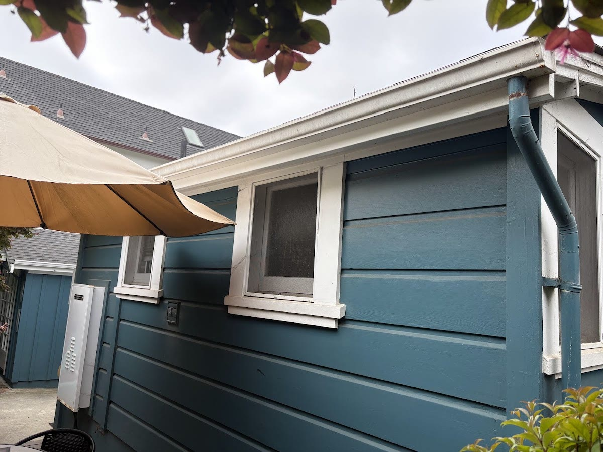
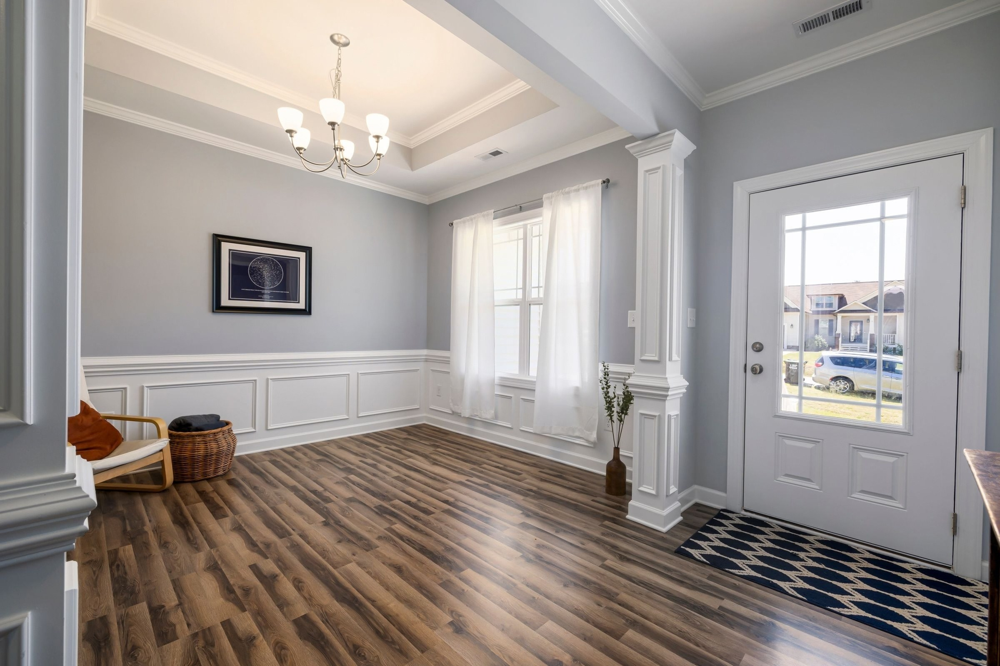
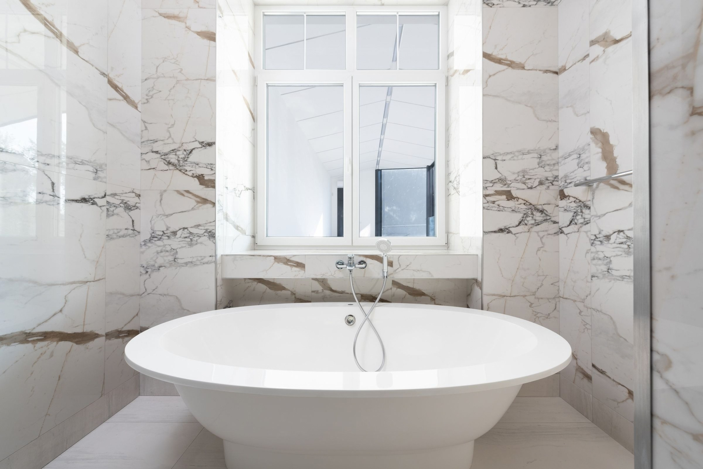
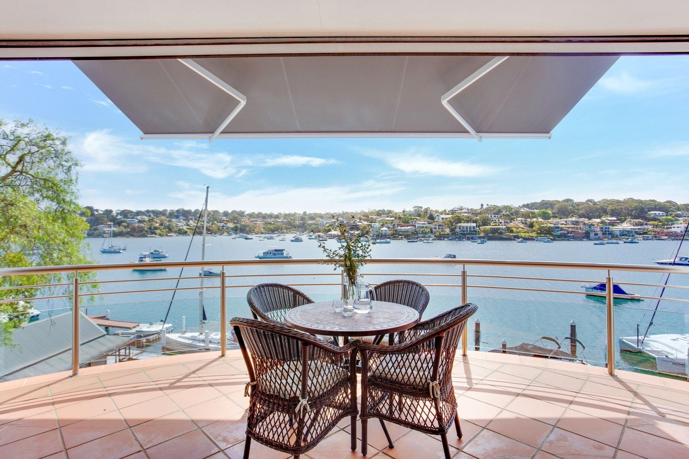

Gallery
Inspiration for
the place you love.
Warm interiors, thoughtful details, and open coastal views.

Outdoor living
Residential inspiration

Wood flooring
Residential inspiration

Bathrooms
Residential inspiration

Coastal glass railings
Residential inspiration
View actual project photographsBig Iron field archive
The photographs below show actual Big Iron projects, including finished details and clearly labeled work in progress.


Select a photograph to see the detail. Finished work and work in progress are labeled individually.
A few details, in motion
Details from
the project archive.
Fence, railing, kitchen vent, and roofline details from four first-party project photographs.
Real Big Iron project photographs with Google-generated sound. The reel uses still project images; it is not live job footage.
Start with a conversation
Tell us what
needs attention.
Tell us what needs attention and where you’re located. We’ll review the scope and the next step.
Request an estimate